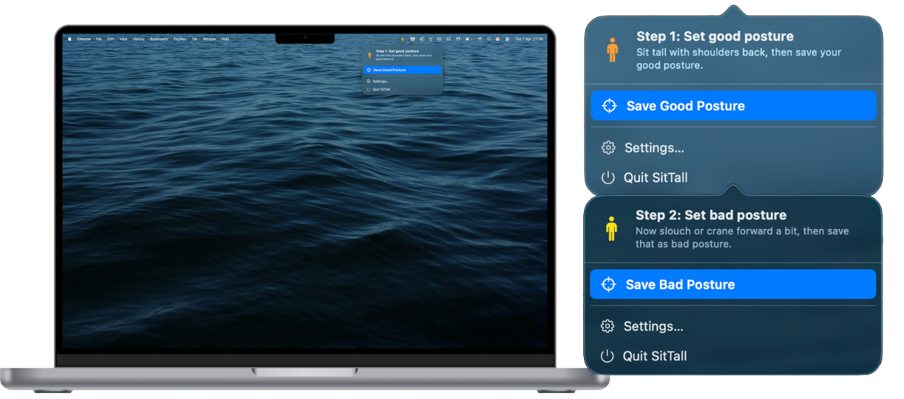
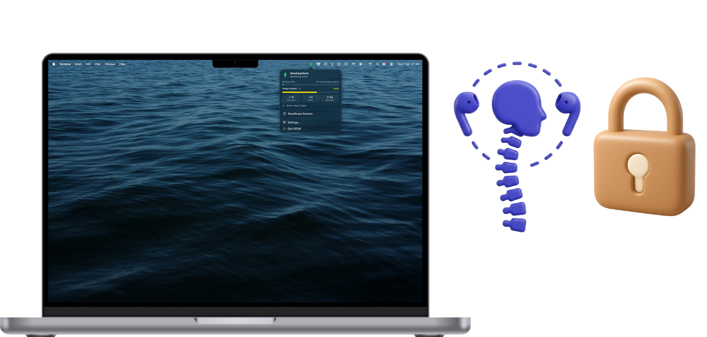

Your AirPods know when you slouch.
SitTall - Fix Your Posture is a posture reminder for Mac that uses supported AirPods motion sensors to detect posture drift and send gentle nudges from the menu bar. No camera. No account. No cloud.
Try SitTall - Fix Your Posture, create launch content around a real desk-work moment, and highlight the privacy-first difference versus camera-based posture tools.

Built for people who spend long hours at a desk and stop noticing posture drift.
SitTall - Fix Your Posture works because it notices posture change when it actually happens. Instead of using a timer or a webcam, it reads head motion from supported AirPods and triggers a local reminder only when your posture drifts past your baseline.
Product story
- Desk posture usually slips during focused work, not when someone is actively thinking about it.
- Camera-based tools introduce privacy concerns and visible setup friction.
- Timer-based nudges interrupt on schedule rather than on real posture change.
- SitTall - Fix Your Posture fits naturally into a Mac workflow and feels lightweight enough to leave running.
How it works
- Connect supported AirPods to a Mac running macOS 14 or later.
- Capture good posture and bad posture once during calibration.
- Let SitTall - Fix Your Posture monitor silently from the menu bar while you work.
- Receive a local reminder when posture drift persists past your threshold.

Core differentiators
| Privacy | Mac app: no camera, no account, no analytics, no network requests. |
|---|---|
| Compatibility | Apple Silicon Mac with macOS 14+ and AirPods 3rd generation, AirPods 4, AirPods 4 with Active Noise Cancellation, AirPods Pro all models, AirPods Max, or Beats Fit Pro. |
| Format | Menu bar app, local notifications, processed entirely on-device. |
Best for creators already showing a Mac, a desk setup, or a workday routine.
SitTall - Fix Your Posture fits naturally into productivity, desk setup, Mac workflow, remote work, tech-lifestyle, and wellness-at-work content. The strongest concepts are honest, simple, and easy to understand in under ten seconds.
Best content angles
- “Your AirPods know when you slouch.”
- “This posture reminder for Mac doesn’t use a camera.”
- “Small menu bar app, surprisingly useful desk habit.”
- “A privacy-first posture reminder for people already living in AirPods.”
Recommended creator flow
- Open on the desk-work posture problem.
- Show the calibration or menu bar setup.
- Show the alert moment and reset.
- Land on no camera, no account, Mac App Store.
Offer positioning
The outreach default is gifted first. Creators can try SitTall - Fix Your Posture before committing to anything bigger. If a creator has a strong concept or wants broader usage, paid collaboration can be discussed on request over email.
Safe messaging
| Say | Posture reminder, posture awareness, gentle nudge, no camera, works offline, on-device. |
|---|---|
| Avoid | Medical treatment claims, guaranteed pain relief, or broad AirPods compatibility claims. |

A clean, creator-friendly product story with enough specificity to send immediately.
Creator FAQ
| Which AirPods work? | AirPods 3rd generation, AirPods 4, AirPods 4 with Active Noise Cancellation, AirPods Pro all models, AirPods Max, and Beats Fit Pro. |
|---|---|
| What Mac do I need? | Apple Silicon Mac running macOS 14 Sonoma or later. Intel Macs are not supported. |
| Does it use my camera? | No. Posture detection uses only supported AirPods motion sensors. |
| Does it work offline? | Yes. SitTall - Fix Your Posture makes no network requests and has no cloud component. |
| Is it paid? | The creator flow is gifted first. Paid collaboration can be discussed if requested. |
| Do I need to show my face? | No. Screen-led or desk-led content works well for this product. |

Contact
Email anillatici@gmail.com to request gifted access, share a concept, or ask about a paid collaboration.